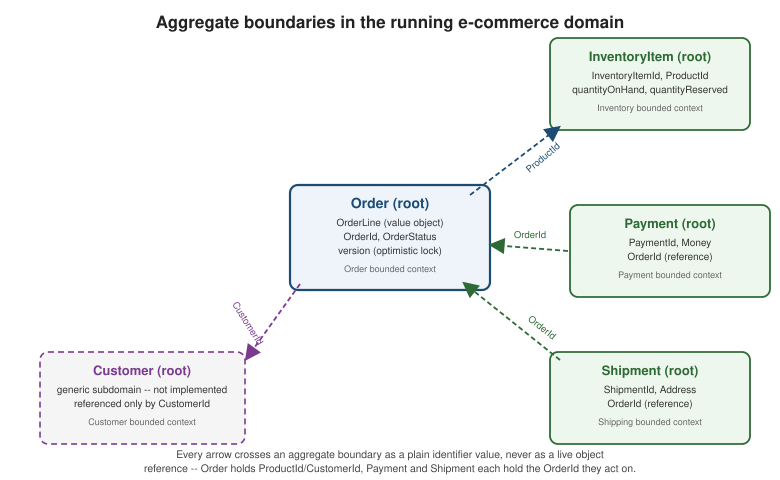

Aggregates
|
This content was generated with the assistance of AI and should be verified against the official documentation before being relied on in production. |
Entities and Value
Objects are the two tactical building blocks; the aggregate is the third, and the one that ties the other two
to a concrete transactional and consistency story. An aggregate is a cluster of entities and value objects,
clustered around one designated root, that is saved, loaded, and made consistent as a single unit — everything
about "what changes together atomically" and "what a single database transaction is allowed to touch" traces back
to how an aggregate’s boundary is drawn. The running Order aggregate introduced in
Structuring the Code is the running example throughout
this page too, shown with the same Java 21 / Spring Boot 4.1.x / Spring Data JPA baseline as the rest of this
section.
The problem of fuzzy boundaries
Richardson’s Microservices Patterns 5.2.1 motivates the whole pattern with a concurrency scenario worth
restating exactly, because it is the scenario the running Order example is built to defend against. Say an
Order has three `OrderLine`s totalling $100, and the business rule is a $50 minimum order amount. User A opens
the order and removes a $30 line — $70 remains, which is fine on its own, so A’s in-memory check passes.
Concurrently, before A’s change is saved, user B loads the same order (from its own, now-stale, snapshot) and
removes a $40 line — $60 remains from B’s point of view, which is also fine on its own, so B’s check passes too.
Neither user’s individual edit violates the minimum. But if both writes are naively applied — last-write-wins on
an in-memory update, or a database write with no concurrency control at all — the merged result is a $30 order,
below the $50 minimum, even though no single check ever saw a value below it.
This is exactly what `removeLine’s invariant check in the code below is meant to prevent, and it is not a bug in the check itself: given the data it can see, the check is correct both times it runs. The gap is that each user’s check runs against their own, possibly stale, in-memory copy of the order — the check alone has no way to know another concurrent edit is in flight. Closing that gap needs a second ingredient, a concurrency-control mechanism that makes the second writer’s stale view visible as stale before it can commit a corrupting result. That mechanism is covered below, once the aggregate’s rules are in place.
The aggregate: one root, one explicit boundary, and the rules
An aggregate is a cluster of entities and value objects with one designated root — here, Order itself — and an explicit consistency boundary drawn around that cluster. Everything inside the boundary is private to
the aggregate: Order’s `OrderLine`s are value objects that live and die with the `Order they belong to, never
addressed, loaded, or modified independently of it. Richardson’s Microservices Patterns 5.2.2-5.2.3 states three
rules for what belongs inside that boundary and how it may be touched; Vernon’s DDD Destilado ch. 5 states four
rules covering much the same ground from a slightly different angle. Reconciled, they come down to this:
| Rule | Statement (reconciled across Richardson Microservices Patterns 5.2.2-5.2.3 and Vernon DDD Destilado ch. 5’s four rules) |
|---|---|
Only the root is referenced from outside |
Code outside the aggregate holds and calls only the root ( |
Other aggregates are referenced by identity, never by object reference |
|
One transaction creates or updates exactly one aggregate |
|
Protect true business invariants inside the boundary, and nothing else |
The minimum-order-amount check inside |
Keep aggregates small |
|
The first rule is what makes the boundary explicit rather than a matter of convention: nothing about Order’s
public API lets a caller reach in and mutate an `OrderLine directly, because lines() returns an immutable copy
(List.copyOf(lines)) and every mutation goes through a method on Order itself, such as removeLine. The third
rule is what makes the boundary transactional: it is the reason PlaceOrderService.placeOrder (below) never
touches a second aggregate inside the same @Transactional method, and it is the underlying reason
Why Not Distributed Transactions treats a
transaction spanning two aggregates as a boundary this section asks services never to cross, not merely
discourages.
Aggregate granularity trade-offs
Given the rules above, there is still a real design choice left: how big should an aggregate be? Consider a
plausible alternative design for the running example — nesting Order inside Customer, so there is one
Customer aggregate that owns a List<Order> internally, rather than a standalone Order aggregate that merely
references CustomerId. Richardson’s Microservices Patterns 5.2.4 argues for the smaller, separate-aggregate
design specifically, and the reasoning generalizes past this one example:
-
Lock contention. If
Customerowns everyOrderinternally, placing any order for a customer means loading and locking the entireCustomeraggregate — including every past order that customer has ever placed — for the duration of the transaction. Two completely unrelated order placements for the same customer, submitted concurrently, would now serialize against each other (or collide on the same@Version) even though neither one touches anything the other cares about. A standaloneOrderaggregate has no such coupling: two orders for the same customer are two independent aggregates, two independent rows, two independent locks. -
Transaction size. Loading a
Customeraggregate that drags in its entire order history to place one new order is not just slower, it is unbounded — the transaction’s size grows with the customer’s lifetime order count, which is exactly the kind of aggregate the "keep aggregates small" rule above warns against. -
Bounded-context fit. Nesting
OrderinsideCustomerwould also forceOrderandCustomerinto the same bounded context and the same database, which undoes the whole strategic split Strategic Design argues for — Customer is deliberately treated as a generic subdomain there, referenced only byCustomerId, precisely so that Order’s context (and database) never has to know how Customer models its own data.
Smaller, separate aggregates reduce lock contention and let each one evolve, scale, and deploy independently of
the others. The trade-off is that more work moves to cross-aggregate coordination — an Order cannot reach into
a Customer object to check anything synchronously anymore, and coordinating two aggregates now means passing
identifiers and, eventually, events between them, which is exactly what the rest of this section
(Domain Events, Sagas)
exists to work through.
Optimistic locking, loading/saving whole aggregates, and eventual consistency
The fuzzy-boundary scenario above is closed by a mechanism, not by a smarter invariant check: the version field
already present on Order in the canonical code below, mapped as JPA’s @Version in the persistence layer. When
both user A’s and user B’s removeLine calls try to save against the same starting version, only the first
save() succeeds; the second fails with an OptimisticLockException instead of silently merging its stale view
into the row. The losing caller cannot proceed on the assumption it started with — it must reload the
now-current Order and re-run its business decision (here, "is removing this line still safe?") against fresh
data, rather than blindly retrying the same stale write. Locking covers the JPA
locking mechanics themselves (@Version, the exception type, retry patterns) in depth; this page only needs the
consequence: the invariant check inside removeLine and the @Version column are two different, complementary
safeguards, and the fuzzy-boundary bug above needed both, not either alone.
A second consequence of treating the aggregate as the consistency boundary is that it is also the unit of
loading and saving. OrderRepository.findById and OrderRepository.save always load and persist the complete
Order graph — the root plus every one of its OrderLine`s — together, never a partial view. There is no
lazy-loading surprise waiting to happen here, because there is nothing left to lazily load: the aggregate boundary
is the boundary of what one `findById/save call touches.
Taking rule three seriously — one transaction, one aggregate — has an unavoidable corollary: consistency
between aggregates can never be transactional, only eventual. Order cannot, in the same transaction that
saves it, also atomically update a Payment or a Shipment aggregate, because that would mean one transaction
touching two aggregates. Domain Events and
Sagas are how that eventual consistency is actually implemented — between aggregates within one service today, and between the separate bounded contexts/microservices each
aggregate’s own context ultimately becomes, once Inventory, Payment and Shipping graduate from illustrative
aggregates into their own services.
Designing aggregates from event storming
Nothing above says how to find the right aggregate boundary in the first place, and in practice it is rarely
obvious upfront — "should OrderLine be its own aggregate?", "does InventoryItem belong inside Order or
outside it?" are not questions a static data model answers well. Event
Storming covers the collaborative workshop format — sticky notes for domain events, the commands that trigger
them, and the aggregates that handle those commands — that is the practical way teams actually discover where
one aggregate ends and another begins, by walking the real business process and watching where consistency truly
needs to be atomic versus where it can safely be eventual, rather than guessing from an ER diagram drawn in
isolation.
Code: the Order aggregate root
The canonical Order aggregate, unchanged from Entities and shown
here in full because this page is about it as a whole, not about any one field:
package com.example.order.domain;
import com.example.order.application.PlaceOrderCommand;
import com.example.order.domain.event.OrderApproved;
import com.example.order.domain.event.OrderCancelled;
import com.example.order.domain.event.OrderPlaced;
import com.example.order.domain.event.OrderRejected;
import com.example.shared.CustomerId;
import com.example.shared.Money;
import com.example.shared.ProductId;
import com.example.shared.event.DomainEvent;
import java.math.BigDecimal;
import java.time.Instant;
import java.util.ArrayList;
import java.util.Currency;
import java.util.List;
import java.util.Objects;
import java.util.UUID;
public record OrderId(UUID value) {
public static OrderId generate() {
return new OrderId(UUID.randomUUID());
}
}
public record OrderLine(ProductId productId, int quantity, Money unitPrice) {
public Money lineTotal() {
return unitPrice.multiply(quantity);
}
}
public enum OrderStatus {
APPROVAL_PENDING, APPROVED, REJECTED, CANCELLED
}
/**
* What the Order.place(PlaceOrderCommand) factory hands back to its caller: the newly
* created aggregate plus the domain events it raised, so PlaceOrderService can save one
* and publish the other without Order depending on any publishing mechanism itself.
*/
public record OrderCreation(Order order, List<DomainEvent> events) {
}
public class Order {
private static final Money MINIMUM_ORDER_AMOUNT = new Money(BigDecimal.valueOf(50), Currency.getInstance("USD"));
private final OrderId id;
private final CustomerId customerId;
private final List<OrderLine> lines;
private OrderStatus status;
private long version;
private Order(OrderId id, CustomerId customerId, List<OrderLine> lines, OrderStatus status) {
this.id = id;
this.customerId = customerId;
this.lines = new ArrayList<>(lines);
this.status = status;
}
/** Creation: a brand-new order, always born APPROVAL_PENDING -- and only if its lines are valid. */
public static OrderCreation place(PlaceOrderCommand command) {
requireValidLines(command.lines());
OrderId id = OrderId.generate();
Order order = new Order(id, command.customerId(), command.lines(), OrderStatus.APPROVAL_PENDING);
OrderPlaced event = new OrderPlaced(id, command.customerId(), List.copyOf(order.lines),
order.totalAmount(), Instant.now());
return new OrderCreation(order, List.of(event));
}
/** Reconstitution: rebuilds an order already persisted, e.g. from a JPA row -- never raises events. */
public static Order reconstitute(OrderId id, CustomerId customerId, List<OrderLine> lines,
OrderStatus status, long version) {
Order order = new Order(id, customerId, lines, status);
order.version = version;
return order;
}
/**
* The creation-time invariants: at least one line, and a total that meets the minimum order amount.
* Public and static on purpose, so an adapter that has to validate before an Order exists (see
* Listen to Yourself) runs exactly this check rather than a copy of it.
*/
public static void requireValidLines(List<OrderLine> lines) {
if (lines.isEmpty()) {
throw new IllegalArgumentException("An order must have at least one line");
}
Money total = totalOf(lines);
if (total.amount().compareTo(MINIMUM_ORDER_AMOUNT.amount()) < 0) {
throw new IllegalArgumentException("Order total " + total + " is below the minimum order amount of "
+ MINIMUM_ORDER_AMOUNT);
}
}
public List<DomainEvent> approve() {
requireStatus(OrderStatus.APPROVAL_PENDING);
status = OrderStatus.APPROVED;
return List.of(new OrderApproved(id, Instant.now()));
}
public List<DomainEvent> reject(String reason) {
requireStatus(OrderStatus.APPROVAL_PENDING);
status = OrderStatus.REJECTED;
return List.of(new OrderRejected(id, reason, Instant.now()));
}
public List<DomainEvent> cancel() {
if (status != OrderStatus.APPROVAL_PENDING && status != OrderStatus.APPROVED) {
throw new IllegalStateException("Cannot cancel order " + id + " in status " + status);
}
status = OrderStatus.CANCELLED;
return List.of(new OrderCancelled(id, Instant.now()));
}
/** The line-mutation method that enforces the minimum-order invariant. */
public void removeLine(OrderLine line) {
requireModifiable();
List<OrderLine> candidate = new ArrayList<>(lines);
if (!candidate.remove(line)) {
throw new IllegalArgumentException("Order " + id + " does not contain line " + line);
}
Money remainingTotal = candidate.stream()
.map(OrderLine::lineTotal)
.reduce(Money::add)
.orElse(new Money(BigDecimal.ZERO, MINIMUM_ORDER_AMOUNT.currency()));
if (remainingTotal.amount().compareTo(MINIMUM_ORDER_AMOUNT.amount()) < 0) {
throw new IllegalStateException("Removing " + line + " would drop order " + id
+ " below the minimum order amount of " + MINIMUM_ORDER_AMOUNT
+ " (remaining would be " + remainingTotal + ")");
}
lines.remove(line);
}
public Money totalAmount() {
return totalOf(lines);
}
private static Money totalOf(List<OrderLine> lines) {
return lines.stream().map(OrderLine::lineTotal).reduce(Money::add).orElseThrow();
}
public OrderId id() {
return id;
}
public CustomerId customerId() {
return customerId;
}
public List<OrderLine> lines() {
return List.copyOf(lines);
}
public OrderStatus status() {
return status;
}
public long version() {
return version;
}
private void requireStatus(OrderStatus expected) {
if (status != expected) {
throw new IllegalStateException("Expected order " + id + " to be " + expected + " but was " + status);
}
}
private void requireModifiable() {
if (status != OrderStatus.APPROVAL_PENDING) {
throw new IllegalStateException("Cannot modify lines of order " + id + " in status " + status);
}
}
@Override
public boolean equals(Object other) {
if (this == other) {
return true;
}
if (!(other instanceof Order order)) {
return false;
}
return Objects.equals(id, order.id);
}
@Override
public int hashCode() {
return Objects.hash(id);
}
}Four things worth pointing at explicitly, in the order this page’s rules were introduced above:
-
The invariant lives on the aggregate root.
removeLineenforcesMINIMUM_ORDER_AMOUNTitself, not a caller checking it beforehand and hoping every other caller remembers to do the same — exactly the "protect true business invariants inside the boundary" rule. -
Other aggregates are referenced by identity.
Orderholds aCustomerId, not aCustomer, and eachOrderLineholds aProductId, not aProduct— there is no object reference anywhere in this class that reaches across an aggregate boundary. -
versionis the optimistic-locking column. It is a plainlonghere becauseOrderis framework-free by design (Structuring the Code's domain layer has no JPA annotations); Repositories, Factories, and Domain Services shows the JPA entity that maps this same field with@Version. -
The repository call happens inside the application service, not here.
Orderitself never calls a repository —PlaceOrderService.placeOrder(Structuring the Code) is the transaction boundary that creates the aggregate viaOrder.place(command)and then persists it with a single line,orderRepository.save(creation.order()), before publishing the events the factory produced. That one call is the whole "save it back through its repository" step of the four-step application-service shape —Orderhas no ideaOrderRepositoryeven exists.
The running domain’s four aggregates
Extending the running example past Order itself, each of the other three bounded contexts from
Strategic Design's context map — Inventory, Payment,
Shipping — would own exactly one aggregate root of its own (InventoryItem, Payment, Shipment
respectively), sized and bounded by the same rules as Order. The figure below shows all four side by side, with
the identity references that cross each boundary called out explicitly.

Every arrow in that figure is a dashed line carrying an identifier type, never a solid line carrying an object
type — Order never holds a Customer field, and Payment never holds an Order field, only the OrderId it
needs to know which order it is authorizing a charge for. That is rule two from the table above, drawn out
literally: four aggregates, four independent consistency boundaries, and every relationship between them
expressed as a value an aggregate can carry inside its own boundary without ever reaching into another one.
Mermaid: two concurrent updates colliding on the version
The sequence below replays the fuzzy-boundary scenario from the top of this page, this time with @Version in
place: user A’s save succeeds and advances the version, user B’s save against the same starting version is
rejected, and user B reloads and retries against the now-current state instead of silently corrupting it.
Notice that B’s business decision does not simply get retried unchanged — B reloads the row that already
reflects A’s removal, then re-evaluates removeLine against that state, which is exactly why the check inside
removeLine and the @Version column each do a job the other cannot: the version check alone would only tell B
that it was too late, without giving B a correct order to decide against, and the invariant check alone would
never have caught the collision at all.